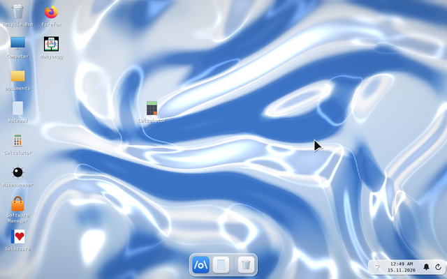
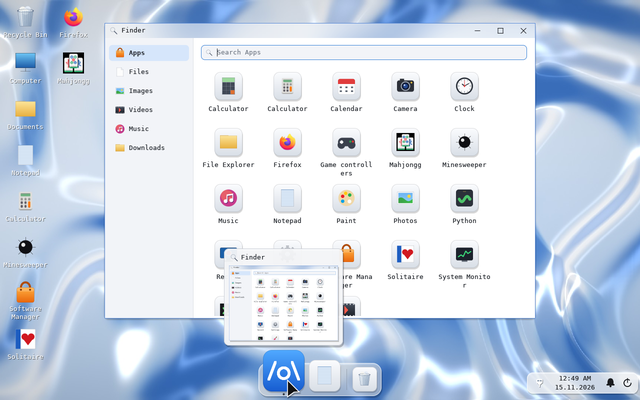

CcOS home > Docs > The desktop
[ Contents | Getting started | The desktop | Shortcuts | Files | Apps | Terminal | Help ]

CcOS has two ways to show the bottom of the screen. Pick one in Settings > Appearance (or the Themes app):
Right-click an app to pin it or unpin it. Point at an app for a moment to see a small live preview of its windows.
Press the Windows key or click /o\.

You can have several desktops with different windows on each. Windows + Tab opens Task View: all windows on this desktop, and your desktops along the top. Drag a window onto a desktop to move it there, or click + New desktop. See Keyboard shortcuts for the keys.
Click to select, double-click to open, drag to move. Right-click > Delete removes the shortcut (the app stays). Right-click an app in the start menu > Add to Desktop puts one back.
| Network icon | Connection status, Wi-Fi on/off, nearby Wi-Fi networks (click one and type the password), and Forget for saved ones. |
| Battery | How full it is, with a lightning bolt while charging. Warnings at 20% and 10%. At 4%, CcOS shuts down by itself after a minute unless you plug in. |
| Clock | Click it for the date, a month calendar and your time zone. |
| Bell | The notification centre and Focus. |
| Tab | What's in it |
|---|---|
| Appearance | Desktop background, Light or Dark, the Glass slider, Bar or Dock, window animations |
| Clock | 24-hour clock, time zone (automatic or pick one), internet time, "Windows is on this computer too" |
| Sound | Volume, startup sound, notification chime |
| Keyboard & mouse | Keyboard layout (Polish or English), pointer colour and size, touchpad speed |
| Power | Battery, brightness, screen off after, sleep after, what closing the lid does |
| Bluetooth | Search for devices, Pair, Connect, Disconnect, Remove |
| Update | New CcOS versions |
| About | System info, and "Let apps draw with the graphics chip" (experimental) |
The Themes app has whole looks in one click (ccos Light/Dark, Mint, Nord, Dracula, Sunset, Rose...) and lets you fine-tune windows, the taskbar, icons and the mouse pointer.
Settings > Appearance has 7 pictures made for CcOS. To use your own, right-click a picture in File Explorer > Set as desktop background. Right-click an empty spot on the desktop > Customize to choose Fill, Fit, Stretch, Tile, Center or Span.
One finger moves the pointer, tap = click, two-finger tap = right-click, two fingers up/down = scroll.
| << Getting started | Keyboard shortcuts >> |
CcOS docs · written for CcOS 1.9.6